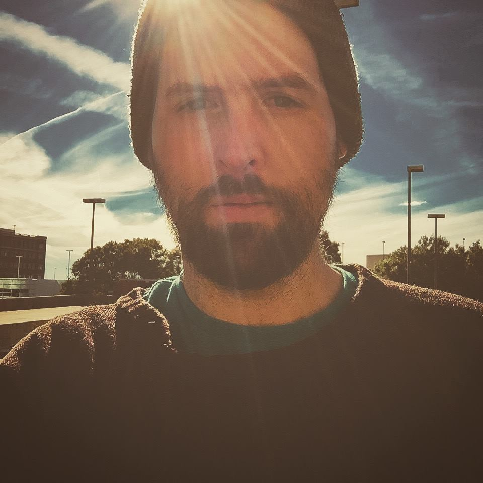

 I was born and raised in Lexington, North Carolina. (No, not a big barbeque fan!) My father is an engineer of various talents and mother an entrepeneaur. I am the younger sibling with one brother, 7 years older. I am an uncle of 1, and the father of a four-legged feisty feline. A few interests include: photography, art and design, video games, travel, and of course animals. I attended Guilford Technical Community College and graduated with an Associates in Simulation and Game design but did not continue to expand on the foundation that was laid from that degree. Although environment, creature, and character design was my original intention, the practicality and more widely applicable nature of programming seemed the wiser choice. Here's to hoping for a brighter future!